What's New
Stay up to date with every PyTrendy release — user-facing improvements, bug fixes, and behaviour changes.
Pre-release documentation
You are viewing the develop (pre-release) build.
The section at the top reflects changes staged for the next stable release.
Switch to the main docs via the badge in the header to see only stable content.
Coming in v1.4.3 pre-release
Staged on the develop branch — will land in the next stable release. Currently available as the latest pre-release:
pip install --pre pytrendy
Four fixes in v1.4.0-dev.3: long gradual ramps no longer get truncated by false flat detection, and two related improvements to abrupt padding reliability.
Long gradual ramps no longer truncated by false flat detection
A 90-day gradual ramp was being chopped into shorter segments because the flat-detection threshold was too aggressive during sustained uptrends. The threshold has been tuned so that long, steady ramps are recognised as a single continuous Up segment. Fixed: #195
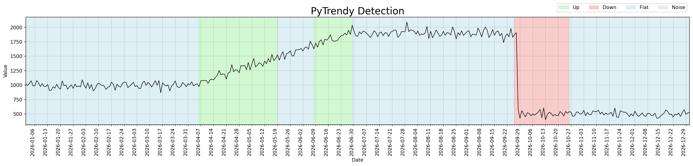
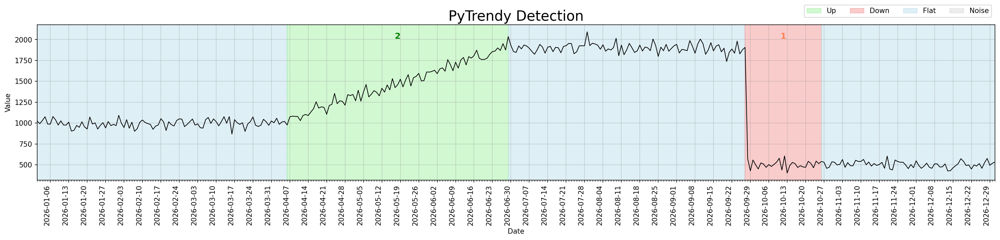
Code
import pandas as pd
import pytrendy as pt
url = (
"https://raw.githubusercontent.com/RussellSB/pytrendy/develop/"
"tests/tests_crashes_edgecases/data/gradual_ramp_edgecases.csv"
)
df = pd.read_csv(url)
result = pt.detect_trends(
df, date_col="date", value_col="gradual_ramp_90d",
method_params=dict(abrupt_padding=28),
)
print(result.filter_segments(direction="Up/Down")[["direction", "start", "end"]])
# direction start end
# Up 2026-04-07 2026-06-29 ← full 90-day ramp
# Down 2026-09-27 2026-10-26
Abrupt padding reliability improvements
Two internal fixes make abrupt-segment padding more robust:
- Double-padding prevention — a second shave pass no longer re-pads segments that were already padded in the first pass, which previously stretched abrupt regions beyond their natural width.
- Padded flag guard — the pad loop now checks each segment's
paddedflag instead of relying on a pass counter, giving more reliable protection against double-padding.
These changes are internal and do not require new user code. Existing abrupt_padding behaviour is preserved; only edge cases where padding was over-applied are corrected.
Plot customisation via plot_params
A new plot_params dictionary, accepted by both detect_trends() and plot_pytrendy(), lets you override every visual aspect of the trend-detection plot. Key capabilities:
- Figure dimensions — set
figsizeto control width and height. - Title & labels — add a domain-specific
title,xlabel, orylabel. - Colour scheme — pass a
colorsdict mapping'Up','Down','Flat','Noise'to any matplotlib colour. - Grid control — toggle grid visibility and customise its appearance via the
griddict. - Legend positioning — move the legend with
legend_locandlegend_bbox_to_anchor.
For the full list of supported keys, see the plot_params reference. Introduced: #122
plot_params (default)
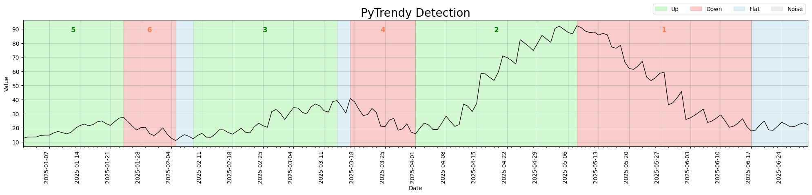
plot_params
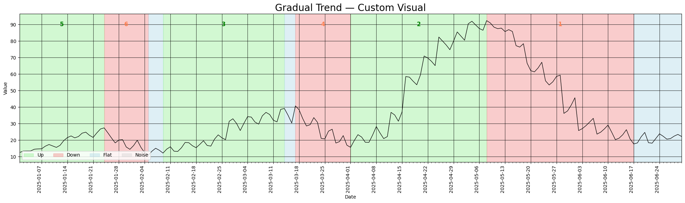
Code
import pytrendy as pt
df = pt.load_data("series_synthetic")
# Default appearance
pt.detect_trends(df, date_col="date", value_col="gradual")
# Custom appearance — black grid at 0.8 opacity, legend in bottom left
pt.detect_trends(
df, date_col="date", value_col="gradual",
plot_params=dict(
figsize=(20, 6),
title="Gradual Trend — Custom Visual",
grid={"visible": True, "color": "black", "alpha": 0.8},
legend_loc="lower left",
),
)
Released in v1.3.0
Released 2026-06-28
v1.3.0 fixes several edge cases in zero-baseline trend detection, including a false noise toggle triggered by flat zero signals and a missed Up direction on zero baseline edgecases, while also deprecating the is_abrupt_padded parameter in favor of the new avoid_noise workflow introduced in v1.2.0. Internal CI housekeeping rounds out the release.
Bug Fixes - Zero Baseline Edgecases
Multiple fixes since v1.2.0 have improved trend detection on zero baseline edgecases. These fixes address edge cases where the algorithm incorrectly suppressed trends or introduced spurious noise segments on series that start at zero.
Up trend detection on smaller ramps
Short-lived Up trends (≥3 days) emerging from a long zero baseline were lost due to an off-by-one error in get_segments() that failed to count the first point of a new direction segment. This primarily affected smaller ramps (e.g. 10→125 over 5 days) on zero baseline edgecase series. The same fix also preserves total_change values for Down segments — the expand_contract step no longer skips the peak value when the preceding segment ends exactly at the turning point, preventing the first day of the drop (value change of 171) from being excluded from the Down segment.
#171 #177
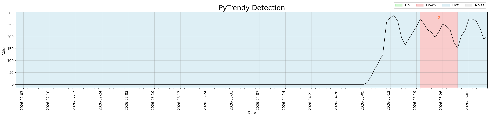
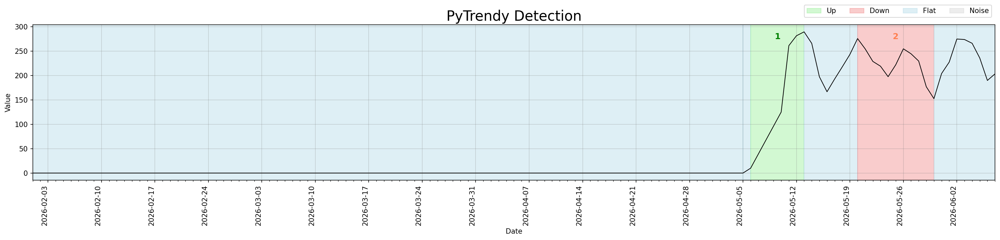
Code
import pandas as pd
import pytrendy as pt
df = pd.read_csv(
"https://raw.githubusercontent.com/RussellSB/pytrendy/develop/"
"tests/tests_crashes_edgecases/data/zero_baseline_edgecases_2.csv"
)
result = pt.detect_trends(
df, date_col="date", value_col="zero_baseline_market_entry_3",
method_params=dict(abrupt_padding=28)
)
print(result.df[["direction", "start", "end", "total_change"]])
False noise suppression on zero-baseline leading edge
The centred rolling mean in noise detection looks ahead at abrupt transitions, producing signal ≈ noise and a false low SNR on the last few zero days before the jump. This created a spurious Noise segment at the leading edge of the transition. A guard now suppresses noise_flag when value=0, previous value=0, and signal!=0 — the signature of an imminent abrupt change inside a run of zeros.
#163 #170
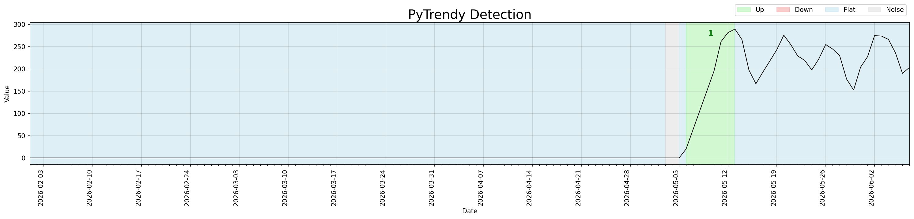
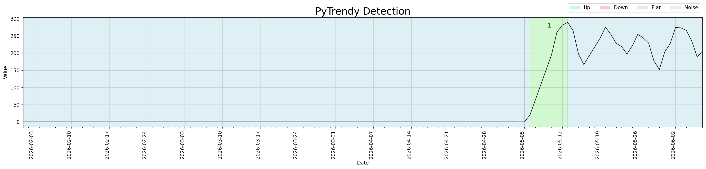
Abrupt padding fix
When abrupt_padding is set, the Up segment is now correctly extended by the padding window instead of being collapsed to Flat. Before the fix, the entire series was misclassified as Flat.
Fixed: #142
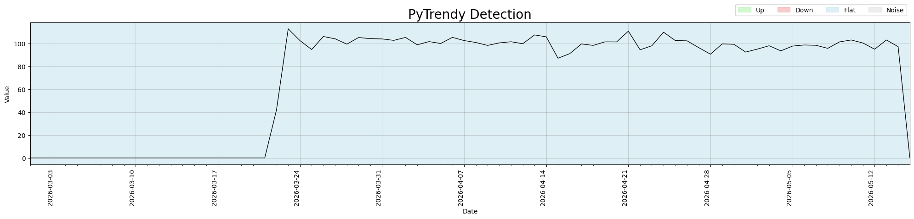
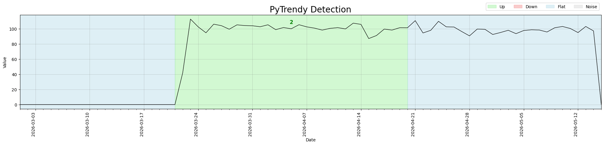
Code
import pandas as pd
import pytrendy as pt
url = "https://raw.githubusercontent.com/RussellSB/pytrendy/develop/tests/tests_crashes_edgecases/data/zero_baseline_edgecases.csv"
df = pd.read_csv(url)
result = pt.detect_trends(
df, date_col="date", value_col="zero_baseline_market_entry_1",
method_params=dict(abrupt_padding=28)
)
print(result.df[["direction", "start", "end"]])
# direction start end
# Flat 2026-03-01 2026-03-20
# Up 2026-03-21 2026-04-20 ← padded by 28 days
# Flat 2026-04-21 2026-05-15
API deprecation: is_abrupt_padded → abrupt_padding
is_abrupt_padded in method_params is deprecated; use integer abrupt_padding for direct control over padded days.
The boolean is_abrupt_padded flag has been deprecated in favour of the integer abrupt_padding parameter. Rather than toggling padding on or off, you now specify the number of days to pad around abrupt transitions directly. The default is 0 (no padding), matching the previous is_abrupt_padded=False behaviour.
Passing is_abrupt_padded still works but raises a DeprecationWarning at runtime, guiding you to migrate.
Introduced: #117
| Old API | New API |
|---|---|
method_params=dict(is_abrupt_padded=True) |
method_params=dict(abrupt_padding=28) |
method_params=dict(is_abrupt_padded=False) |
(default — no change needed) |
Code
import pytrendy as pt
df = pt.load_data("series_synthetic")
# Before — deprecated (raises DeprecationWarning)
result = pt.detect_trends(df, date_col="date", value_col="abrupt",
method_params=dict(is_abrupt_padded=True))
# After — use abrupt_padding (int: number of days to pad)
result = pt.detect_trends(df, date_col="date", value_col="abrupt",
method_params=dict(abrupt_padding=28))
print(result.df[["direction", "start", "end"]])
Agentic docs & workflow improvements
The What's New page and CI/CD automation have been significantly improved through agentic AI integration and developer workflow enhancements.
- Whats-new generator migration — the automated docs generator was migrated from GitHub Models API to OpenCode with Kimi K2.7-code, then to deepseek-flash-v4 with a 5-minute timeout. Path handling and access tokens were refined across multiple iterations. #165 #174 #175 #172
- PR plot generation skill — a new
pr-plotsagent skill automates before/after plot generation for fix/feature PRs, with human-in-the-loop image upload to GitHub. #176 - Agent skill tree & copilot migration — consolidated agent context into
AGENTS.mdplus trigger-loaded skills under.opencode/skills/, migrating from Copilot instructions. #167
CI/CD pipeline improvements
Release automation, permissions, and whats-new trigger reliability were hardened across multiple PRs.
Documentation improvements
Agentic Docs, Noise Control & Trend Fixes (v1.2.0)
Released 2026-05-09
Four updates in v1.2.0: an agentic docs generator, a new noise toggle, and two fixes to trend metrics and normalised input handling.
Automated What's New — agentic docs generator
The What's New page itself is now generated by an AI agent. A GitHub Actions workflow
(whats-new.yaml)
fires automatically whenever a GitHub Release is published. It invokes
scripts/generate_whats_new.py,
which calls OpenCode (opencode-go/deepseek-flash-v4) to write a user-friendly What's New entry
from the release notes, then opens a pull request for review. (Previously powered by the
GitHub Models API / GPT-4.1.)
Introduced: #120
Key behaviours:
- Pre-releases (from
develop) add a collapsible entry to the Upcoming Changes section. - Stable releases (from
main) add a versioned entry and open a sync PR back todevelop. - Code examples reference GitHub raw URLs (
developfor pre-release,mainfor stable) so they are always reproducible. - Within each section, fixes and features are listed in descending time order (most recent at the top).
- Before/after plot comparisons use
plot_pytrendy(df, value_col, segments, suppress_show=True)— this ensures a consistentfigsize=(20, 5), weekly grid, and legend across all images so they are directly comparable. - Agent instructions embedded in the script docstring remind the generator to verify that referenced CSV files still exist before each refresh.
Noise detection control (avoid_noise)
A new avoid_noise parameter in method_params lets users opt out of noise detection entirely.
When set to False, spikes and noisy regions are ignored and trend detection proceeds straight through them.
Introduced: #110
Useful for modelling a new-market launch or quasi-experiment where the signal is zero before and
after the activation window. With avoid_noise=False, boundary artifacts around step-changes are
suppressed, yielding clean Up/Down segments.
avoid_noise=True (default)
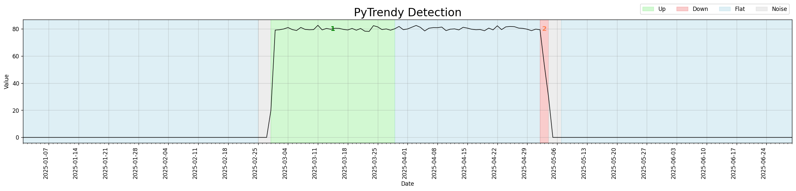
avoid_noise=False
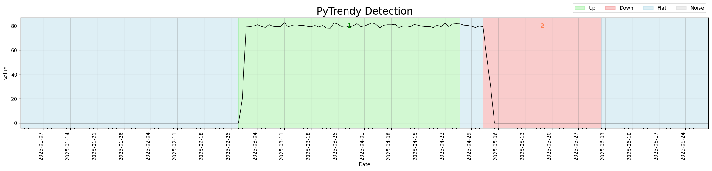
Code
import pytrendy as pt
df = pt.load_data("series_synthetic")
df.set_index("date", inplace=True)
# Simulate a new-market / quasi-experiment: zero activity before and after activation
df.loc["2025-01-01":"2025-02-27", "abrupt"] = 0
df.loc["2025-05-05":"2025-06-30", "abrupt"] = 0
df = df.reset_index()
result = pt.detect_trends(
df, date_col="date", value_col="abrupt",
method_params=dict(is_abrupt_padded=True, avoid_noise=False)
)
print(result.df[["direction", "start", "end"]])
Metrics for all segment types
Segment metrics (pct_change, change_rank) were not computed for every trend type.
All output rows now carry complete metric columns regardless of classification.
Fix: #88
| direction | start | end | pct_change | change_rank |
|---|---|---|---|---|
| Up | 2000-01-01 | 2000-05-01 | +42% | 1 |
| Down | 2000-06-16 | 2000-12-31 | −38% | 2 |
| Flat | 2000-05-02 | 2000-06-15 | +0% | 3 |
Before v1.1.11, all three columns were NaN for Flat (and Noise) segments. Ranked by change_rank.
Code
import pandas as pd
import pytrendy as pt
url = "https://raw.githubusercontent.com/RussellSB/pytrendy/main/tests/tests_crashes_edgecases/data/low_value_series.csv"
df = pd.read_csv(url)
result = pt.detect_trends(df, date_col="date", value_col="trend", plot=False)
print(result.df[["direction", "pct_change", "change_rank"]])
Trend detection on normalised time series
detect_trends() previously returned an empty result when the input signal was scaled to the
[0, 1] range (e.g., after min-max normalisation). The absolute detection threshold was too large
relative to the signal amplitude — causing the algorithm to detect nothing, which the flat fill-in
logic then represented as a single all-Flat series.
Fix: #79
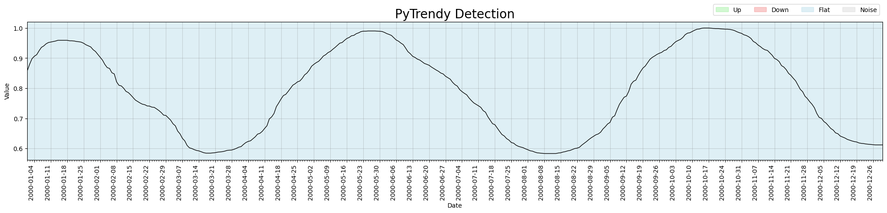

The same normalised series now returns a correctly detected Up / Flat / Down sequence.
Regression test: test_low_value_series
Code
import pandas as pd
import pytrendy as pt
url = "https://raw.githubusercontent.com/RussellSB/pytrendy/main/tests/tests_crashes_edgecases/data/low_value_series.csv"
df = pd.read_csv(url)
result = pt.detect_trends(df, date_col="date", value_col="trend")
print(result.df[["start", "end", "direction"]])
Noise Detection & Robustness (v1.1.3 – v1.1.10)
A sustained series of improvements to noise detection, spike precision, and edge-case stability — making the algorithm significantly more reliable on real-world noisy signals.
Released in v1.1.10
Released 2026-03-21
Comprehensive automated tests added for noise edge cases and crash scenarios — full coverage for the noise detection module. (#46)
Details
- Automated tests for noise crashes (
test_noise_crashes.py) and edge cases (test_noise_edgecases.py). - Artifact-cleaning helpers refactored to be more testable and deterministic.
- Several
pytest-mplbaseline images corrected.
Released in v1.1.8 and v1.1.9
v1.1.8 — 2025-11-15 · v1.1.9 — 2026-02-07
Targeted improvements to noise detection precision and flat segment handling. (v1.1.8: tag · v1.1.9: #42)
Flat fill-in improvements (v1.1.8)
Building on the flat fill-in first introduced in v1.1.0, v1.1.8 extended coverage to two additional edge cases:
- Trailing / leading regions: if the detected segments don't span the full series range, the uncovered leading or trailing period is now filled in with a Flat segment.
- Robustness to grouping: zero-day boundary regions are safely skipped; grouped segments no longer produce gaps.
The before/after below shows three spikes distributed across a gradual series. In v1.1.7, the period after the last Noise segment (2025-06-18 → 2025-06-30) was left uncoloured. In v1.1.8 it is correctly filled as Flat.
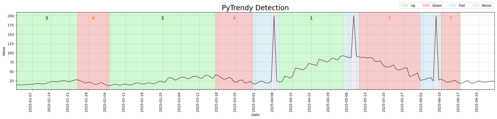
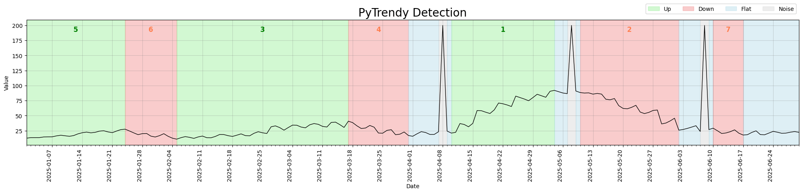
Regression test: test_gradual_four_spikes_distributed_flatfillins
Code
import pandas as pd
import pytrendy as pt
df = pt.load_data("series_synthetic")
df["date"] = pd.to_datetime(df["date"])
df.set_index("date", inplace=True)
df.loc["2025-04-08":"2025-04-08", "gradual"] = 200
df.loc["2025-05-08":"2025-05-08", "gradual"] = 200
df.loc["2025-06-08":"2025-06-08", "gradual"] = 200
df = df.reset_index()
pt.detect_trends(df, date_col="date", value_col="gradual",
method_params=dict(is_abrupt_padded=True))
Noise detection (v1.1.8)
- Better precision for a spike on an otherwise flat-zero signal.
- Improved sensitivity when flat conversions emerge from noisy gradual trends.
trend_too_flatnow treated as a flat conversion rather than noise.- Up/down classification uses the actual signal (not the smoothed derivative), reducing downstream artifact-cleaning needs.
- Gradual trends enclosed in noise are handled more leniently.
- Noise adjustment for contract logic now crops correctly before start/end boundary checks.
Spike precision (v1.1.9)
Further improvement to spike detection precision for signals with a single dominant outlier surrounded by otherwise stable values. (#42)
Released in v1.1.3 – v1.1.7
v1.1.3 — 2025-10-16 · v1.1.4 — 2025-10-19 · v1.1.5 — 2025-10-22 · v1.1.6 — 2025-10-23 · v1.1.7 — 2025-11-01
A focused series of noise detection improvements, from an initial major revamp through to edge-case tuning and stability fixes.
v1.1.7 — expand-contract & noise stability
- Expand-contract: gradual trends can now be retroactively updated when a newer gradual changes the reference baseline. (a99c30f)
- Noise detection: resolved edge cases around abrupt-noise boundaries, opposite-direction overlaps, and post-grouping validity checks. (9b41189, 06aa45c)
- Plot: visual displacement is only applied when it does not break the up/down direction contract. (7ae27ad)
v1.1.6 — noise threshold tuning
Made the noise threshold slightly less sensitive to avoid false positives on near-zero signals. (#16)
Signals where all values are very close to zero were being incorrectly classified as alternating Noise/Flat bands. After the threshold adjustment, the same signal is correctly identified as a single Flat segment.
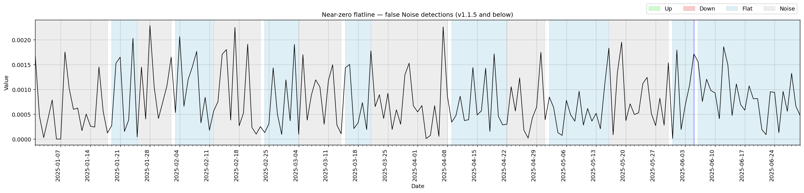
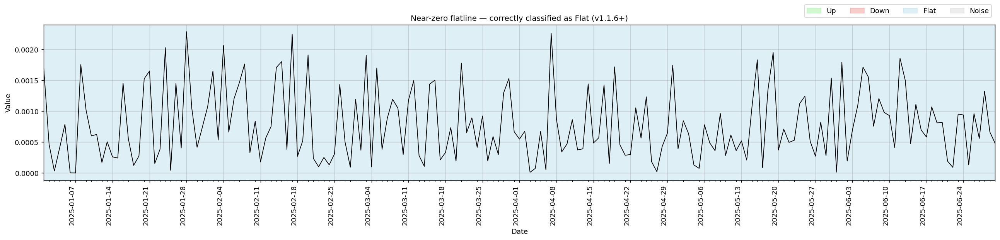
v1.1.5 — abrupt shaving infinite loop
Fixed an infinite loop in abrupt shaving when a segment was broken into abrupt sub-segments. (#14)
v1.1.4 — noise detection major revamp
Trend detection now much less sensitive to noise spikes overall. Introduces DTW-based abrupt/noise distinction and more robust spike classification. (#13)
Before the revamp, the algorithm fragmented noisy-but-flat segments into many small alternating Noise/Flat bands and missed underlying gradual downtrends. After, it consolidates the noise and correctly identifies the downtrend structure.
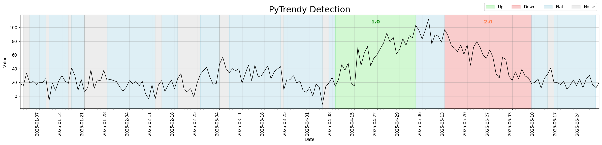
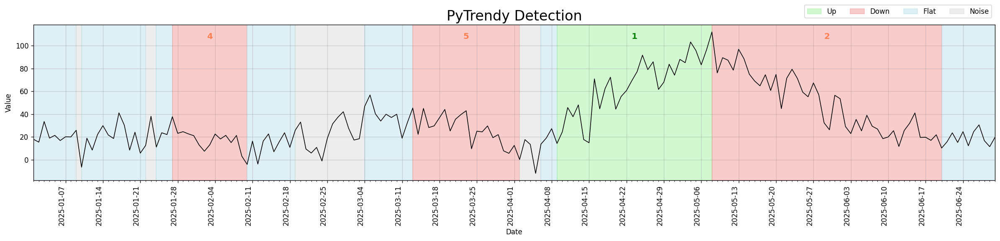
Regression test: test_noisy_edgecase_3_scenario
Code
import pandas as pd
import pytrendy as pt
url = "https://raw.githubusercontent.com/RussellSB/pytrendy/main/tests/tests_crashes_edgecases/data/noisy_edgecases.csv"
df = pd.read_csv(url)
pt.detect_trends(df, date_col="date", value_col="noisy_edgecase_3")
v1.1.3 — spikes on gradual trends
Improved handling of spike segments that sit on top of gradual trends. (#12)
Previously, a single isolated spike in a gradual trend series was expanded into a wide Noise band spanning several weeks, masking the surrounding Up/Down structure. After the fix, spikes are classified as a tight 1–3 day Noise segment with the gradual trends fully intact on either side.
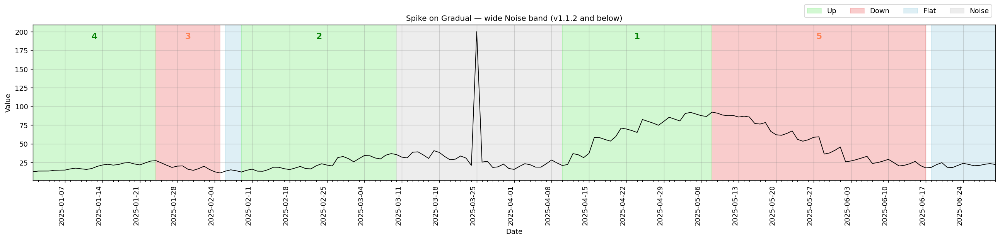
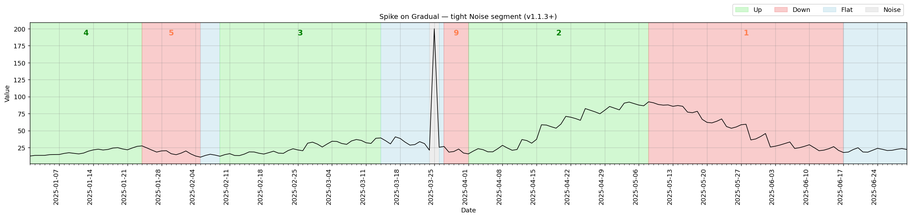
Regression test: test_gradual_spike_single_mid_series
Code
import pytrendy as pt
df = pt.load_data("series_synthetic")
df.set_index("date", inplace=True)
df.loc["2025-03-25":"2025-03-25", "gradual"] = 200 # inject spike
df = df.reset_index()
pt.detect_trends(df, date_col="date", value_col="gradual",
method_params=dict(is_abrupt_padded=True))
Core Engine & Initial Launch (v1.0.x – v1.1.2)
The foundation of PyTrendy — from initial release through the first major engine overhaul that introduced flat fill-in, a cleaner results API, and comprehensive robustness improvements.
Released in v1.1.1 and v1.1.2
v1.1.1 — 2025-10-15 · v1.1.2 — 2025-10-15
Patch releases addressing deployment pipeline issues and a relative-import fix introduced when v1.1.0 restructured the package layout. No user-facing behaviour changes. (v1.1.1 · v1.1.2)
Released in v1.1.0
Released 2025-10-15 — minor version: new features and major robustness overhaul
The most significant update to PyTrendy's core engine since the initial launch — new flat fill-in, a simpler results interface, and a thorough revamp of the signal processing pipeline. (#8)
Flat fill-in
Gaps between classified segments are now automatically filled with a Flat segment, so the output always covers the full input time range.
Before this change, those uncovered intervals appeared as white gaps between coloured regions. After v1.1.0, they are explicitly represented as blue Flat segments.
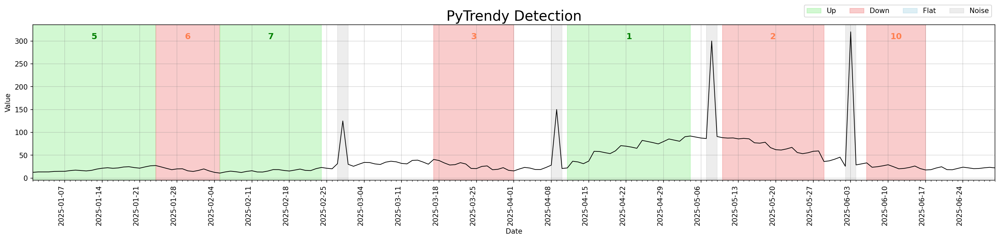
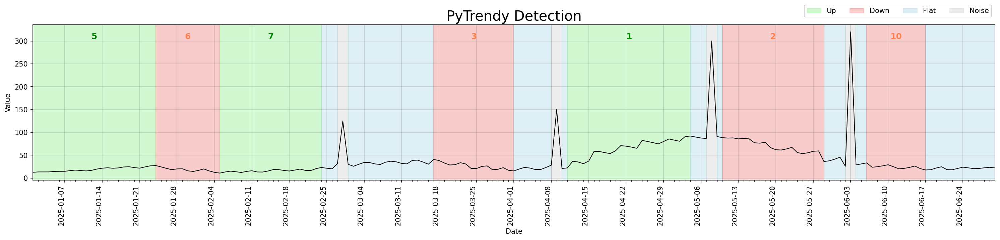
Regression test: test_gradual_four_spikes_distributed_flatfillins
Code
import pytrendy as pt
df = pt.load_data("series_synthetic")
df.set_index("date", inplace=True)
df.loc["2025-02-28":"2025-02-28", "gradual"] = 125
df.loc["2025-04-09":"2025-04-09", "gradual"] = 150
df.loc["2025-05-08":"2025-05-08", "gradual"] = 300
df.loc["2025-06-03":"2025-06-03", "gradual"] = 320
df = df.reset_index()
pt.detect_trends(
df,
date_col="date",
value_col="gradual",
method_params=dict(is_abrupt_padded=False),
)
Abrupt trend detection — illustrated
v1.1.0 introduced is_abrupt_padded for the first time, enabling boundary padding so that
abrupt transitions span their natural width rather than hairline boundaries.
This unlocks quasi-experiment designs such as Interrupted Time Series Analysis (ITSA),
where clean pre/post intervention windows are required.
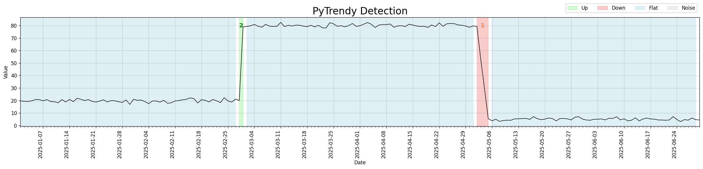
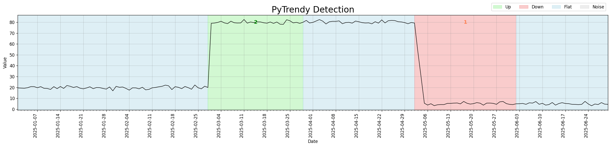
Code
import pytrendy as pt
df = pt.load_data("series_synthetic")
pt.detect_trends(df, date_col="date", value_col="abrupt",
method_params=dict(is_abrupt_padded=True))
Simplified results interface
The TrendyResults object gained two shorter access patterns:
segments_df = result.segments_df
summary_df = result.summary["df"]
segments_df = result.df # shorter alias
summary_df = result.df_summary # direct attribute
Both names continue to work in v1.1.x.
Brown-bug fix
Up (green) and Down (red) regions were stacking on top of each other in v1.0.x, blending into a brownish artifact. The root cause — abrupt spikes being shaved without direction-awareness — was resolved; segments now align directionally before any visual displacement. (b0d1690 · 5509178)
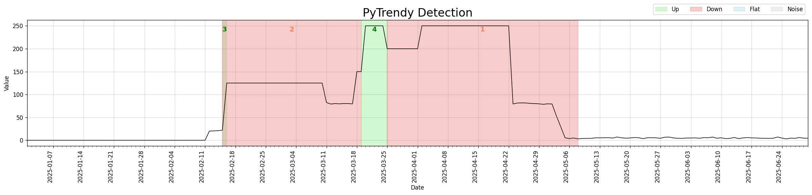
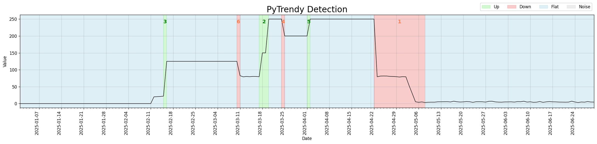
Code
import pytrendy as pt
df = pt.load_data("series_synthetic")
df.set_index("date", inplace=True)
df.loc["2025-01-01":"2025-02-11", "abrupt"] = 0
df.loc["2025-02-16":"2025-03-10", "abrupt"] = 125
df.loc["2025-03-18":"2025-04-15", "abrupt"] = 150
df.loc["2025-03-20":"2025-04-22", "abrupt"] = 250
df.loc["2025-03-25":"2025-04-01", "abrupt"] = 200
df = df.reset_index()
pt.detect_trends(
df,
date_col="date",
value_col="abrupt",
method_params=dict(is_abrupt_padded=False),
)
Other core processing revamp & bug fixes
The signal processing and post-processing pipeline was extensively reworked (#8 · 6c53790):
- More robust handling of edge cases across all trend types.
- Abrupt detection: better shaving, sub-segmentation, and direction-sensitivity (c66ed2e).
- Gradual swallowing stretches flexibly across neighbouring segment adjustments (5f6e2c9).
- Touching consecutive abrupt segments are now correctly grouped (50d2f52).
has_inverse()now also validates total-change consistency, not just direction (37411fe).- Windows path separators handled correctly in the data loader (d04c49c).
detect_trends()is now robust to wide DataFrames containing non-numeric columns (a7c286d).- Fixed a crash when no segments are detected (a3ac41f).
Released in v1.0.x
August–September 2025 — initial release
PyTrendy launched with gradual, abrupt, and flat trend detection in a single call. (v1.0.0)
Gradual trend detection
Smooth up and down trends are detected and annotated as Up, Down, and Flat segments out of the
box with a single call to detect_trends().

Code
import pytrendy as pt
df = pt.load_data("series_synthetic")
pt.detect_trends(df, value_col="gradual", date_col="date")
Abrupt trend detection
Abrupt step-changes in the signal are detected and annotated as Up or Down regions. v1.0.x
already supported multi-segment abrupt series. Boundary padding (is_abrupt_padded=True) was
not yet available — detections reflect instantaneous precision at the point of change.
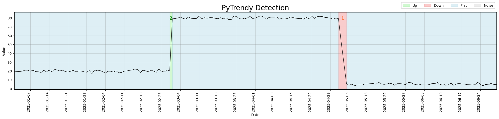
Code
import pytrendy as pt
df = pt.load_data("series_synthetic")
pt.detect_trends(df, date_col="date", value_col="abrupt",
method_params=dict(is_abrupt_padded=False))
Noise detection — random noise on a gradual trend
When the input signal carries moderate random noise layered on top of a gradual trend, the algorithm identifies noise segments while still extracting the underlying Up/Down/Flat structure.
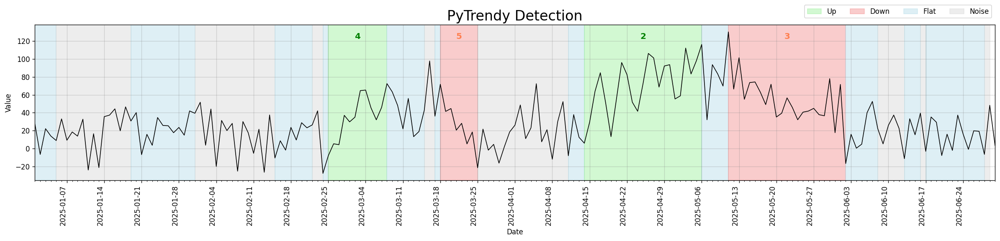
Code
import pytrendy as pt
df = pt.load_data("series_synthetic")
pt.detect_trends(df, date_col="date", value_col="gradual-noisy-20")
Noise detection — spikes on a gradual trend
Isolated outlier spikes sitting on top of a smooth gradual trend are classified as short Noise segments, leaving the surrounding Up/Down structure intact.
This was the initial implementation of spike detection in v1.0.x. Subsequent versions (v1.1.3, v1.1.4, v1.1.7) targeted significant precision improvements — reducing over-wide Noise bands and better distinguishing spike outliers from sustained noise regions.
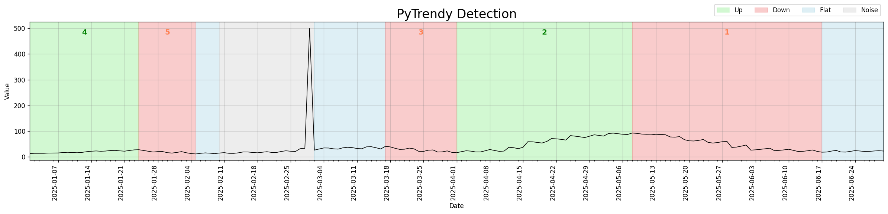
Code
import pytrendy as pt
df = pt.load_data("series_synthetic")
df.set_index("date", inplace=True)
df.loc["2025-03-01":"2025-03-01", "gradual"] = 500 # inject spike
df = df.reset_index()
pt.detect_trends(df, date_col="date", value_col="gradual")